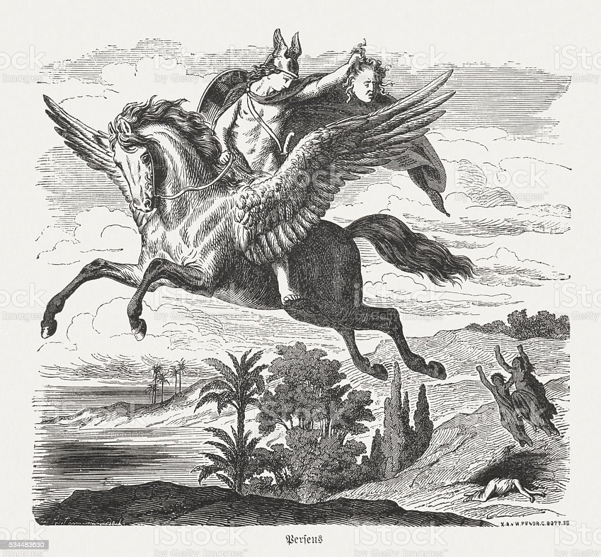

Pégaso(em grego: Πήγασος; romaniz.: Pégasos), na mitologia grega, é um cavalo alado símbolo da imortalidade. Sua figura é originária da mitologia grega, presente no mito de Perseu e Medusa. Pégaso nasceu do sangue de Medusa quando foi decapitada por Perseu.
Belerofonte matou a poderosa Quimera, montando Pégaso após domá-lo com ajuda de Atena e do cabresto de ouro, que em seguida tentou usá-lo para chegar ao Monte Olimpo. Mas Zeus fez com que ele derrubasse seu cavaleiro fazendo uma vespa o picar, e Belerofonte morreu devido à grande altura. Zeus o recompensou transformando-o na constelação de Pégaso, onde deveria dali em diante ficar à serviço dos deuses. Outra história diz que quando Zeus mandou a vespa e Belerofonte caiu, Atena ordenou que o chão ficasse macio, assim ele não morreria pela queda.
A lenda, basicamente, diz que Pégaso nasceu do pescoço de Medusa, após ser decapitada por Perseu. Mediante isso, quando o sangue de Medusa encostou na água, ouviu-se um trovão. Assim, com uma espuma branca surgiu o cavalo branco com asas. No entanto, há uma história sobre Poseidon e Medusa. Ele não podia tocá-la, já que ela tinha o poder de transformar as pessoas em pedra. Contudo, também nasceu Chrysaor, irmão de Pégaso. Ainda assim, a lenda diz que Pégaso tem a forma de cavalo porque seu pai se transformava com essa forma para tentar atrair Medusa. Como resultado disso, com o trovão, Pégaso passou a ter conexões com as forças do céu. Ademais, conforme a lenda, ao nascer Pégaso bateu os cascos no monte Hélicon dando origem a fonte de Hipocrene, símbolo de inspiração para as artes. Ainda assim, dizia-se que quem bebesse as águas desta fonte passaria a ter dons artísticos.

Inicialmente, Belerofonte, herói grego, queria lutar contra Quimera, monstro da mitologia grega. No entanto, contou a ajuda da deusa Atena que lhe entregou uma rédea de ouro para domar Pégaso. A partir disso Belerofonte conseguiu matar Quimera e salvar Corinto, cidade fundada pelo rei Eetes.
Contudo, Belerofonte foi tomado por orgulho e pensou que poderia voar com Pégaso até o monte Olimpo, morada dos deuses. Com isso, Zeus, deus da mitologia grega, fez com que o cavalo voador fosse picado por um animal derrubando o herói.
Apesar da queda, Atena fez com que a terra ficasse mole evitando a morte de Belerofonte que, após isso, passou a viver como um mendigo procurando o cavalo. Ainda assim, Zeus permitiu que o cavalo continuasse voando até às estrelas, onde foi denominado de constelação de Pégaso.
A história ainda diz que no Século II o astrônomo Plonomeu conseguiu identificar a constelação que aparece tando no hemisfério norte quanto no hemisfério sul.
Ademais, a constelação de Pégaso tem o formato triangular com três estrelas que representam as suas asas. Assim, seu corpo no formato de um quadrado é comporto por quatro estrelas. Contudo, sua constelação faz parte de outras 88 encontradas na Via Láctea.
Entretanto, a identificação da constelação surgiu no primeiro século d.C. e relacionado em 11783 por Willian Herschel. Além disso, Markab é o nome da sua estrela mais brilhante e as demais são: Schedar, Enif, Biham, Algenib e Matar. De acordo com observações a constelação está fora do centro da Via Lácte e, por isso é mais fácil a sua visualização.